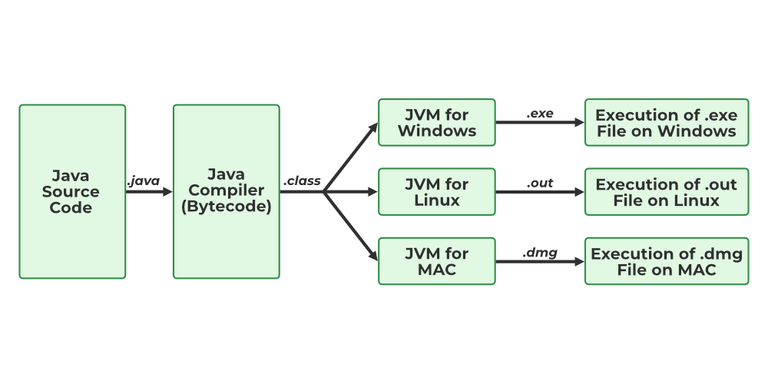

What is JavaScript
JavaScript is a client-side programming language used to create dynamic interactions
in
app, game and web
development.Commonly represented as JS, this language is considered one of the core technologies of the
web in
conjunction with HTML and CSS.
Developers use JavaScript to bring a webpage to life, as it transforms an otherwise static page into one
that
responds to user engagement, livens up the page with motion, and displays real-time, variable, and
personalized
content.Java is a programming language and computing platform first released by Sun Microsystems in
1995.
It has evolved from humble beginnings to power a large share of today’s digital world, by providing the
reliable
platform
upon which many services and applications are built. New, innovative products and digital services
designed for
the future continue to rely on Java, as well.
While most modern Java applications combine the Java runtime and application together, there are still
many
applications and even some websites that will not function unless you have a desktop Java installed.
Java.com,
this website, is intended for consumers who may still require Java for their desktop applications
specifically
applications targeting Java 8. Developers as well as users that would like to learn Java programming
should
visit

How does JavaScript differ from other markup languages?
The three foundational languages of web design and development work together while simultaneously adding
greater degrees of complexity to a website.
HTML is a basic markup language. It tells the browser how to present content to the
user. Among other things, HTML is used to:
Define the start and end of paragraphs.
Convert text into headings.
Add basic styling to text like bold and italics.
Provide structure for spacing, indents, tables, and more.
Embed images or videos into a page.
CSS is a style sheet language. This rules-based language dictates to the browser how to
apply styles to the various HTML elements on a page. It can also be used to add more complex structures,
like columns and rows.
JavaScript is a scripting language that improves user interaction. For example, it allows developers
to:
Animate images.
Autoplay videos.
Load pop-ups.
React to user engagement.
Display dropdown menu options or links.
Present personalized content.
Pull in content from other websites.
Set cookies.
the dev.java website instead and business users should visit oracle.com/java for more information.
The Java Plug-in software is a component of the Java Runtime Environment (JRE). The JRE allows some
applications
written in the Java programming language to launch via some browsers. The Java Plug-in software is not a
standalone program and cannot be installed separately.
Four main concepts of Object-Oriented programming are:
1-Abstraction
2-Encapsulation
3-Inheritance
4-Polymorphism
How does JavaScript differ from other markup languages?
The three foundational languages of web design and development work together while simultaneously adding
greater
degrees of complexity to a website.
What is Python?
Python is an interpreted, object-oriented, high-level programming language with dynamic
semantics. Its high-level built in data structures, combined with dynamic typing and dynamic binding,
make it
very attractive for Rapid Application Development, as well as for use as a scripting or glue language to
connect
existing components together. Python's simple, easy to learn syntax emphasizes readability and therefore
reduces
the cost of program maintenance. Python supports modules and packages, which encourages program
modularity and
code reuse. The Python interpreter and the extensive standard library are available in source or binary
form
without charge for all major platforms, and can be freely distributed.
Often, programmers fall in love with Python because of the increased productivity it provides. Since
there is no
compilation step, the edit-test-debug cycle is incredibly fast. Debugging Python programs is easy: a bug
or bad
input will never cause a segmentation fault. Instead, when the interpreter discovers an error, it raises
an
exception. When the program doesn't catch the exception, the interpreter prints a stack trace. A source
level
debugger allows inspection of local and global variables, evaluation of arbitrary expressions, setting
breakpoints, stepping through the code a line at a time, and so on. The debugger is written in Python
itself,
testifying to Python's introspective power. On the other hand, often the quickest way to debug a program
is to
add a few print statements to the source: the fast edit-test-debug cycle makes this simple approach very
effective.>
You may also be interested in:
Website Title
Website Address
XML
What is SQL?Introduction to SQL
SQL (Structured Query Language) is a declarative programming language specifically designed for managing
and manipulating data stored in relational databases. Developed in the 1970s by IBM researchers, SQL
allows users to perform operations on databases, such as data retrieval, insertion, updating, and
deletion.
The Purpose of SQL
SQL serves as the bridge between users and databases. Relational databases are designed to store data in
an organized, structured way, minimizing redundancy and ensuring data consistency. SQL provides a
standardized way to interact with such databases, allowing for:
Efficient data retrieval
Data manipulation
Database structure management
Control over data access and permissions
SQL as a Declarative Language
Unlike procedural languages (like Python or Java), SQL is declarative. This means that instead of
instructing the computer on how to accomplish a task step-by-step, SQL allows users to specify what they
want to be done. SQL’s declarative nature abstracts away the implementation details, making it simpler
for users to perform complex data operations.
SQL Database Management Systems (DBMS)
SQL is commonly used with relational database management systems (RDBMS) like:
MySQL
PostgreSQL
Oracle Database
Microsoft SQL Server
SQLite
Each DBMS supports SQL, though they may implement unique extensions to the language.
SQL Syntax and Structure
SQL syntax is composed of a series of statements, each fulfilling a specific purpose within the
database. These statements are grouped into four primary categories:
Data Definition Language (DDL)
DDL statements define or alter database structures, creating or modifying tables, schemas, indexes, and
relationships.
CREATE: To create a new database object.
ALTER: To modify an existing database object.
DROP: To delete a database object permanently.
TRUNCATE: To delete all rows in a table without removing the table structure.
5.2 Data Manipulation Language (DML)
DML statements interact with data stored in tables.
SELECT: Retrieves data from one or more tables.
INSERT: Adds new records to a table.
UPDATE: Modifies existing data within a table.
DELETE: Removes records from a table .
5.3 Data Control Language (DCL)
DCL manages user permissions within the database.
GRANT: Provides specific privileges to users.
REVOKE: Removes specific privileges from users.
5.4 Transaction Control Language (TCL)
TCL ensures data integrity during data transactions.
COMMIT: Saves all changes made in the current transaction.
ROLLBACK: Reverts changes to a previous state if errors occur.
SAVEPOINT: Creates a temporary point within a transaction for partial rollbacks.
Theoretical Concepts Underpinning SQL
6.1 Relational Database Theory
SQL operates within the context of relational databases. The theory is based on data stored in tables
(or "relations") consisting of rows and columns. Each table represents an entity, each row a unique
record, and each column an attribute of that entity.
6.2 Set Theory and Relational Algebra
SQL's design is influenced by set theory and relational algebra. SQL queries can be thought of as
operations on sets, using operations like selection, projection, and joins.

What is WPT?
Frontend Web Technologies
The frontend is the portion of web programming that users interact with directly. It includes
everything
users
see on a webpage or web application, from text and images to buttons and forms. The key technologies
involved in
frontend development include:
HTML (Hypertext Markup Language): HTML is the fundamental building block of the web. It defines the
structure of
a web page by marking up text, links, images, forms, and other elements. HTML provides the skeleton for
all web
pages, with tags used to delineate different sections of content.
CSS (Cascading Style Sheets): While HTML provides the structure, CSS is responsible for the design and
layout of
a webpage. It controls the colors, fonts, spacing, positioning, and responsiveness of elements on a
page. With
CSS, developers can create visually appealing web pages and ensure they adapt to different screen sizes
and
devices (responsive design).
JavaScript: JavaScript is a client-side scripting language that enables dynamic behavior on web pages.
It allows
developers to create interactive features such as form validation, animations, real-time updates, and
event
handling. With JavaScript, web pages can respond to user input without needing to reload, providing a
seamless,
engaging experience.
Frontend Frameworks and Libraries: Over the years, developers have created powerful libraries and
frameworks to
streamline frontend development. Popular frameworks like React.js, Angular, and Vue.js allow developers
to build
more complex, maintainable, and efficient web applications. These frameworks provide tools for creating
reusable
components, managing application state, and interacting with backend services.
Backend Web Technologies
The backend is the server-side component of web development. It handles business logic, database
interactions,
and serves the necessary data to the frontend. The backend is responsible for processing requests from
the
frontend and returning the appropriate response. Some common backend technologies include:
Programming Languages: Traditional backend languages like PHP, Java, and Ruby are still widely used for
web
development. However, newer languages like Python and JavaScript (Node.js) have gained popularity in
recent
years due to their ease of use, speed, and versatility. Python, for example, is known for its simplicity
and is
often used with frameworks like Django and Flask for web development. Node.js, a JavaScript runtime,
allows
developers to use JavaScript on the backend, making it easier to use the same language for both frontend
and
backend development.
Backend Frameworks: Backend frameworks like Django (Python), Laravel (PHP), Spring Boot (Java), and
Express
(Node.js) provide the structure for building web applications. These frameworks come with built-in tools
for
routing, handling HTTP requests, interacting with databases, and more. They help developers save time
and reduce
errors by providing standardized methods and code conventions.